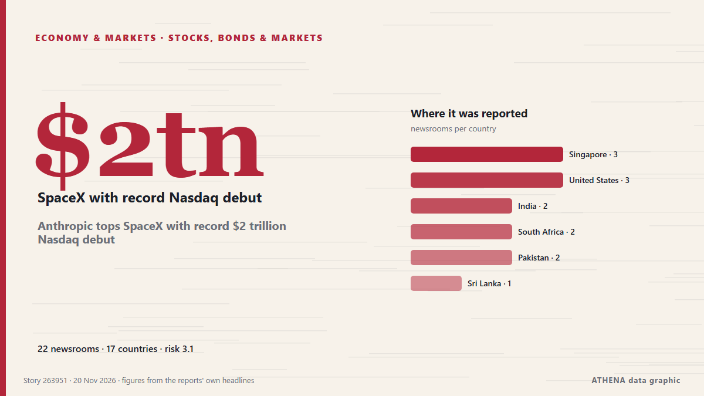

ATHENA Glaux Intelligence — Παγκόσμια ειδησεογραφική ανάλυση — κάθε αριθμός εξηγημένος
Κάθε είδηση, ελεγμένη σε πολλές χώρες.
Το ATHENA Glaux παρακολουθεί 635 ειδησεογραφικά μέσα σε όλο τον κόσμο. Μια είδηση γίνεται επαληθευμένο γεγονός μόνο όταν την αναφέρουν ανεξάρτητα μέσα. Κάθε γεγονός δείχνει ποιος το ανέφερε πρώτος και έναν βαθμό κινδύνου με τους λόγους του.
Αναφορές έρχονται από ανεξάρτητα μέσα — όταν δύο συναντηθούν στην ίδια ιστορία, γίνεται επιβεβαιωμένο γεγονός.
Πώς ελέγχει το ATHENA μια είδηση
- ΣυλλογήΟι αναφορές φτάνουν από ανεξάρτητα μέσα σε πολλές χώρες.
- ΑντιστοίχισηΌταν δύο μέσα συναντιούνται στην ίδια είδηση, γίνεται επαληθευμένο γεγονός.
- ΕξήγησηΚάθε γεγονός δείχνει ποιος ήταν πρώτος, πόσο εξαπλώθηκε και γιατί ο κίνδυνος είναι αυτός.

Οικονομία & ΑγορέςAnthropic tops SpaceX with record $2 trillion Nasdaq debut
As the first frontier AI company to go public, Anthropic is poised to become the sector's benchmark. από SABC News
Οι τίτλοι των ειδήσεων παρουσιάζονται στα αγγλικά, όπως δημοσιεύτηκαν.
A brief history of Nvidia’s recent stock fluctuations
"We've got this," Colette Kress, interim CEO of Nvidia, said Tuesday night as she closed out the embattled chip company's third quarter earnings call. από The Verge
Who is Hakeem Jeffries, the Democrat nominated to become the first Black US House Speaker
Poised to become the next Democratic House speaker, Jeffries has shifted from unconditional support for Israel to calls for change, but remains vague about what that means as progressives press him… από Haaretz (English)

Πλοία στα θαλάσσια περάσματα τώρα
Ζωντανές μετρήσεις AIS. Πατήστε ή περάστε πάνω από μια μπάρα για λεπτομέρειες.
Anthropic raises record $81.3 billion in blockbuster IPO
Anthropic ANT.O has raised $81.3 billion in the largest stock-market debut on record after upsizing its offering, valuing the Claude chatbot maker at $1.5 trillion in a deal that defies concerns… από Cyprus Mail
Elon Musk says record $446m spending on US midterms was ‘pretty foolish’
The multi-billionaire also said he was "not Maga", distancing himself from the political movement linked to Trump. από BBC Business
NASA’s Voyager 1 is an awe-inspiring one light-day away from Earth
It is humanity’s first emissary to cross this monumental threshold way out in interstellar space. από The Globe and Mail
Γεωπολιτική, Πολιτική & Ασφάλεια
Περισσότερα ›Trump’s anger with Vance is growing after VP blamed the Iran war for the Republican midterm losses: report
Vance made a shocking admission after Democrats took control of Congress in the midterms: ‘The reason we lost is the war’ από The Independent
- Εκλογές & πολιτική
Brazil's Senate approves Lula's $10 billion fiscal package after costly election spending
- Εκλογές & πολιτική
With US midterms underway, courts rebuff Trump's pressure on state election officials
- Διπλωματία & σύνοδοι
US, China can help end Ukraine war, Trump tells Xi before trilateral with Putin
- Εκλογές & πολιτική
US Democrats flip Alaska Senate seat as Mary Peltola wins race
Οικονομία, Χρηματοοικονομικά & Αγορές
Περισσότερα ›Gold hits 14-month low as strong dollar, rate bets weigh
Gold fell more than 1 percent to a 14-month low on Thursday, as it continued to face pressure from dollar strength, with markets fully pricing in a rate hike at the Federal Reserve's December meeting… από The Korea Times
- Μετοχές, ομόλογα & αγορές
Stocks look to blockbuster Anthropic IPO to break losing streak
- Μετοχές, ομόλογα & αγορές
ASX slumps, Wall Street dives despite strong debut for Anthropic
- Μετοχές, ομόλογα & αγορές
Anthropic valuation soars above £1.5 trillion in record stock market float
- Μετοχές, ομόλογα & αγορές
Newcomer wins top stock market journalism award
Εμπόριο, Βιομηχανία & Υποδομές
Περισσότερα ›Russia cannot dictate 'unrealistic security demands': UK premier
Andy Burnham says Europe ready to 'enter serious discussions on European security, but only if a peace agreement is reached between Ukraine and Russia' από Anadolu Agency (English)
- Κατασκευές & υποδομές
A third Ukrainian strike in 4 days halts rail traffic on Russia's Kerch Bridge to Crimea
- Εμπόριο & εμπορικές συμφωνίες
Azerbaijan president begins 3-day visit to Vietnam
- Κατασκευές & υποδομές
Mitsotakis Signals Possible Restrictions on New Building on ‘Iconic’ Greek Islands
- Ναυτιλία & λιμάνια
Steer Acquires Mercator International
Ενέργεια, Πόροι & Περιβάλλον
Περισσότερα ›PACNEWS TWO, 19 NOVEMBER 2026
In this bulletin: 1. PACIFIC — Pacific leaders leave mark on COP31 Ocean compact2. από Islands Business (Fiji)
- Κλίμα & κλιματική πολιτική
Australia’s PM Albanese criticised for posing with Putin in Apec family photo
- Ακραία καιρικά & φυσικές καταστροφές
Heavy rain hits Ras Al Khaimah and Fujairah as UAE issues weather alerts
- Ενεργειακή ασφάλεια
Mideast crisis ‘largest threat’ to energy security ever: IEA
- Κλίμα & κλιματική πολιτική
COP31 draft climate deal removes mention of fossil fuels
Τεχνολογία, ΤΝ & Κυβερνοασφάλεια
Περισσότερα ›Meta to price Muse Charm gadget at $300, The Information reports
Unnerved employees are worried the AI agent could be mixing up conversations and exposing users’ data. από The Straits Times
- Κυβερνοασφάλεια
Hackers Leak Visa, Mastercard and JPMorgan Customer Data
- Διάστημα & δορυφόροι
Musk accuses Ukraine’s Zelensky of lying about Starlink
- Διάστημα & δορυφόροι
Scientists succeed in growing potatoes in simulated moon soil
- Τεχνητή νοημοσύνη
AI lab Anthropic sets stock market record with $81 billion IPO
Επιχειρήσεις, Εταιρείες & Επενδύσεις
Περισσότερα ›Target for landmine-free Zimbabwe by 2030 threatened by aid cuts
Global aid cuts threaten the target for Zimbabwe to be free by 2030 of mines planted during the 1970s liberation war, with only four percent of land remaining to be cleared, a demining charity said… από NewZimbabwe
- Εταιρική στρατηγική
U.S. Holds Historic Deep-Sea Mining Lease Sale
- Κλάδοι & εταιρικοί κίνδυνοι
Best Early Black Friday Phone Deals (2026)
- Εταιρική στρατηγική
Google refuses Government request to remove Russell Brand YouTube video
- Εταιρική στρατηγική
Newly Patched VMware vCenter Flaw Exploited as Zero-Day by Chinese APT
Δυστυχήματα & έκτακτες ανάγκες
Περισσότερα ›Prisoner allegedly 'beaten and set on fire by his son' in vicious cell attack
John Krieger was allegedly set upon by his son Jacob in the cell they shared in an Irish prison. από Birmingham Mail
- Δυστυχήματα & έκτακτες ανάγκες
Mike Lynch Yacht Crew Unaware of Wind Risks, UK Probe Finds
- Δυστυχήματα & έκτακτες ανάγκες
Helicopter was flying ‘extremely’ close to water before deadly crash in Florida, NTSB says
- Δυστυχήματα & έκτακτες ανάγκες
Doctors amputate weightlifter Hafizuddin's right arm after crash
- Δυστυχήματα & έκτακτες ανάγκες
M5 blocked near Clevedon as police respond to incident
Τρεις τρόποι να διαβάσετε σήμερα
Ξεκινήστε από αυτόν που ταιριάζει στον χρόνο σαςΕπαληθευμένα γεγονότα
Κατά σειρά έκτασης της κάλυψης
- Gibson Dunn Wins $6.5B Global Freezing Injunction for Binance in Abu Dhabi Court After Crypto Heist132 μέσα · 52 χώρεςΚίνδυνος 3.5
- International News: Trump, Xi and Putin hold rare 3-way meeting in China101 μέσα · 49 χώρεςΚίνδυνος 5.4
- Trump bought up to $265,000 of Nvidia stock in September, disclosure shows144 μέσα · 47 χώρεςΚίνδυνος 4.4
- LPG Tanker Tara Gas Fire Extinguished in the Strait of Hormuz103 μέσα · 39 χώρεςΚίνδυνος 4.5
- Trump wraps up Asia trip without meeting N. Korean leader following widespread speculation74 μέσα · 33 χώρεςΚίνδυνος 3.8
Γραφείο Ανάλυσης
Κάντε μια ερώτηση και διαβάστε τεκμηριωμένη αξιολόγηση μιας βασικής είδησης, μαζί με το τι θα την διέψευδε.
Ανοίξτε το Γραφείο Ανάλυσης ›Η σημερινή εικόνα
| 01:00 | 547 |
|---|---|
| 02:00 | 425 |
| 03:00 | 305 |
| 04:00 | 382 |
| 05:00 | 550 |
| 06:00 | 559 |
| 07:00 | 518 |
| 08:00 | 674 |
| 09:00 | 419 |
| 10:00 | 466 |
| 11:00 | 445 |
| 12:00 | 493 |
| 13:00 | 591 |
| 14:00 | 647 |
| 15:00 | 679 |
| 16:00 | 505 |
| 17:00 | 517 |
| 18:00 | 554 |
| 19:00 | 581 |
| 20:00 | 701 |
| 21:00 | 618 |
| 22:00 | 632 |
| 23:00 | 553 |
| 00:00 | 457 |
Κίνδυνος των σημερινών γεγονότων
Αναδυόμενα σήματα
- Απότομη αύξηση · Ενεργό τώραRohingya
- Απότομη αύξηση · Ενεργό τώραWilling
- Απότομη αύξηση · Ενεργό τώραGreenland
- Απότομη αύξηση · Ενεργό τώραDonald Trump and Xi Jinping
- Απότομη αύξηση · Ενεργό τώραGambia
Μείνετε ενημερωμένοι
ATHENA Weekly Risk Picture
Οι μεγαλύτεροι γεωπολιτικοί, οικονομικοί και ναυτιλιακοί κίνδυνοι της εβδομάδας, διασταυρωμένοι και βαθμολογημένοι.
Κάθε Παρασκευή στις 08:00 ώρα Ελλάδας · δωρεάν · στα αγγλικά
Δωρεάν εγγραφήΤο ATHENA στο Telegram
Οι ειδήσεις τη στιγμή που δημοσιεύονται: έκτακτα γεγονότα με κίνδυνο 6 ή περισσότερο, ωριαία σύνοψη, ενημερώσεις κινδύνου και η ημερήσια ενημέρωση στις 10:00.
Δωρεάν · αναρτήσεις στα αγγλικά · αποχωρείτε όποτε θέλετε
Είσοδος στο κανάλιΤην εγγραφή τη διαχειρίζεται η beehiiv με διπλή επιβεβαίωση: τίποτα από όσα πληκτρολογείτε δεν αποστέλλεται στο ATHENA, και κάθε τεύχος έχει σύνδεσμο διαγραφής.
Παρακολούθηση κινδύνων
Περισσότερα ›Παγκόσμιοι κίνδυνοι — εβδομάδα 47, 2026 (16–22 Νοε) ›